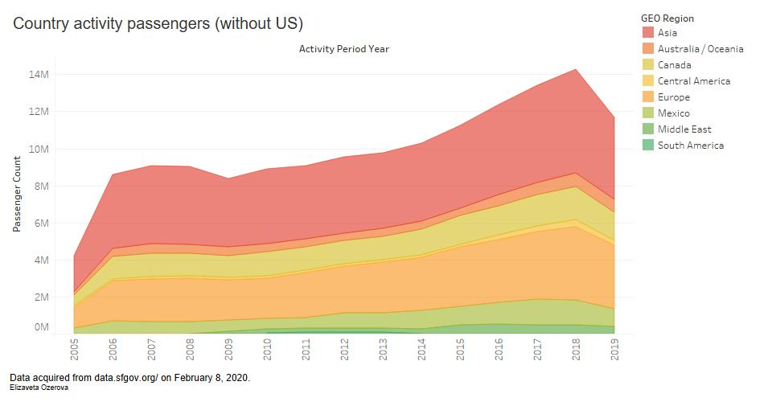

The purpose of this prototype is to visualize the trends of passenger amount of different countries.
Wrangling
The data was filtered in Tableau. US was excluded from GEO Regions analysis. (It has more passengers data, so I excluded it to get only other countries plot.)
Activity periods were grouped by year in Tableau.
Tableau Prototype

Prototype was done using Tableau. The data used: "Passenger Number" (sum for each GEO Region group) (as y scale), "Activity period" in years (as x scale) and "GEO Region" as colors.
Analysis
From this visualization we can conclude that Asia has the most number of passengers coming to and from this airport. Second place is taken by Europe.
We also can notice some trends. For example, there was a rase in passenger amount in 2006 ant the next high increase started from 2014 and got to it's peak at 2018. From 2018 to 2019 we can see a big decrease of passengers.
Computer Science student, enthusiast and explorer. Cinematography geek, learning to do everything CS related from editing to visual effects. Love working with hardware, especially motorcycles.